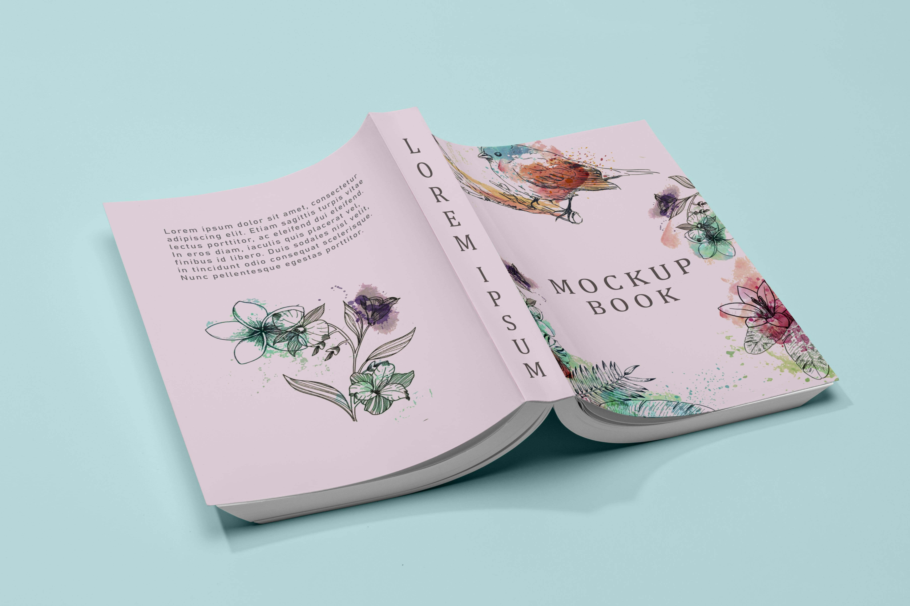

<ion-content>
<div class="main">
  <div class="menuu">
    <div (click)="goTo('dashboard')" >
      <ion-icon style="font-size: 24px;" name="home" ></ion-icon>
    </div>
    <div (click)="goTo('profile')" class="active">
      <ion-icon style="font-size: 24px;  color: #258b87;" name="person" ></ion-icon>
    </div>
    <div (click)="goTo('my-books')">
      <ion-icon style="font-size: 24px;" name="book" ></ion-icon>
    </div>
    <div (click)="goTo('created')">
      <ion-icon style="font-size: 24px;" name="create" ></ion-icon>
    </div>
    <div (click)="logOut()">
      <ion-icon style="font-size: 24px;" name="log-out" ></ion-icon>
    </div>
  </div>
  <div style="background-color: #f3f4f8;" class="content quickSans">
    <div class="c_header ">
      <div>
        
      </div>
      <div style="font-size: 14px; font-weight: bolder; padding: 10px 10px 0 10px; ">
        {{user.firstName}} {{user.lastName}}
        <br/> <span style="color: #ced2d3;"> Histoire(s) 23</span>
        <br/><ion-icon  style="font-size: 22px; color: red;" name="heart"></ion-icon>(3) , 
        <ion-icon color="primary" style="font-size: 22px;" name="create" ></ion-icon> (29)
      </div>
    </div>
    <div>
      <ion-card>
        
        <ion-card-header>
          <ion-card-title class="quickSans">Le contrat</ion-card-title>
        </ion-card-header>
        <ion-card-content class="quickSans" style="text-align: justify;">
          Vous publiez ou souhaitez publier vos histoires sur Chronickl, 
          merci de cliquer ici pour tout savoir sur le contrat qui nous lie.
        </ion-card-content>
      </ion-card>

      <ion-card>
        
        <ion-card-header>
          <ion-card-title class="quickSans">Mes infos</ion-card-title>
        </ion-card-header>
        <ion-card-content class="quickSans" style="text-align: justify;">
          cliquer ici Pour mettre à jour vos informations bancaires, paypal et/ou de Mobile Money.
        </ion-card-content>
      </ion-card>

      <ion-card>
        
        <ion-card-header>
          <ion-card-title class="quickSans">Transactions</ion-card-title>
        </ion-card-header>
        <ion-card-content class="quickSans" style="text-align: justify;">
          En cliquant ici Vous aurez accès en temps réel à toutes les transactions 
          de paiement concernant vos chroniques.
        </ion-card-content>
      </ion-card>

      
    </div>
    <span style="position: absolute; top: 5px; right: 5px;">
      <ion-icon name="cog-outline"></ion-icon>
    </span>
  </div>
</div>
</ion-content>
